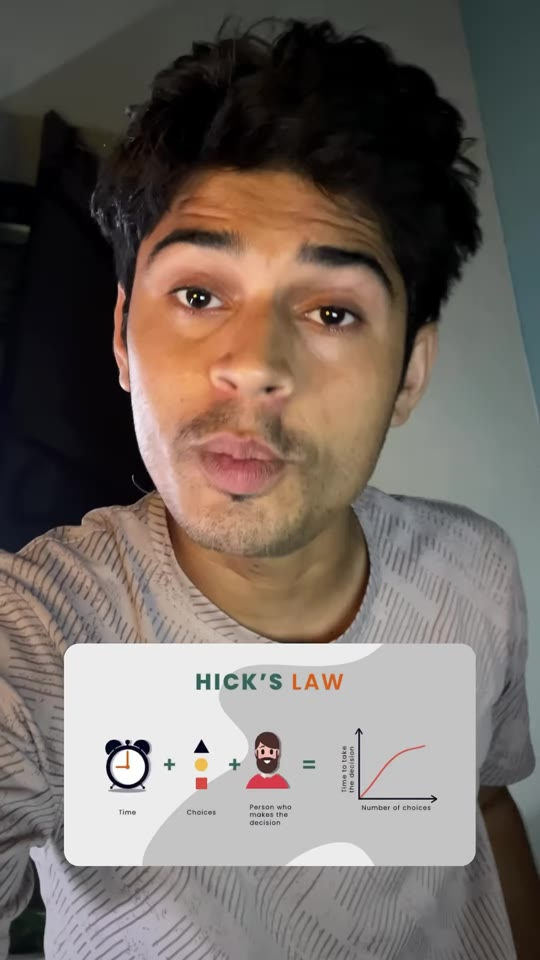
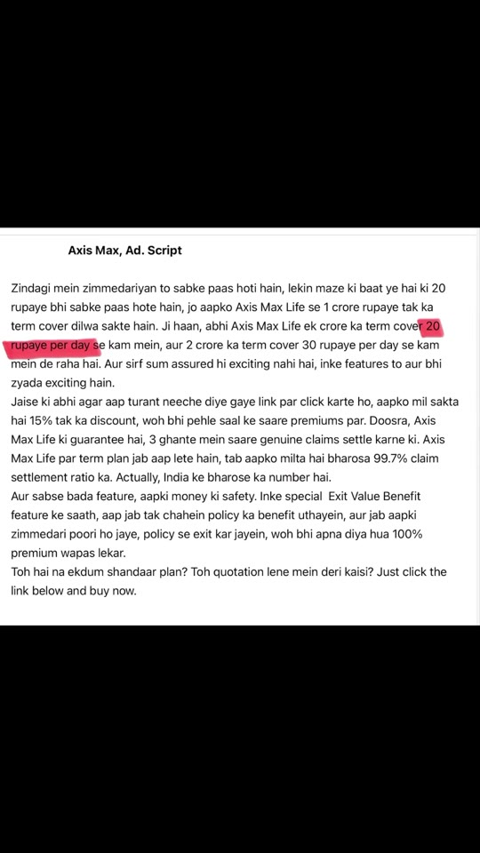
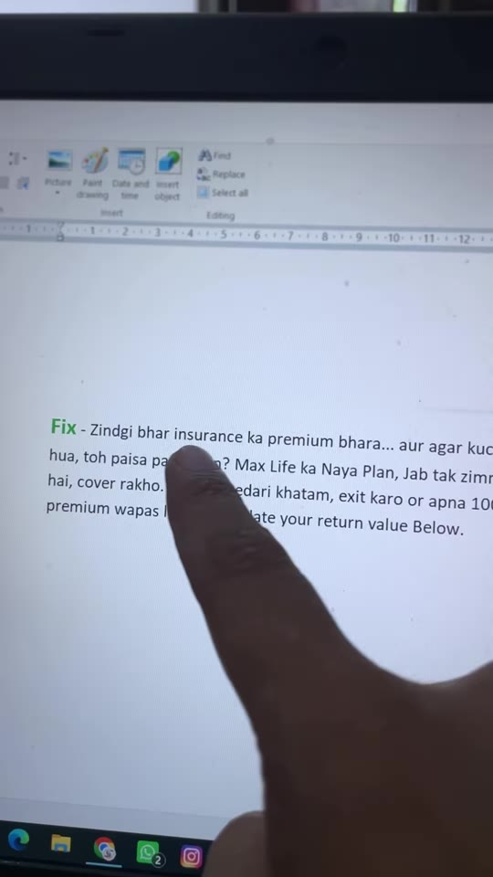

Meta-Ads · Ad-Copywriting
Less Sells More: Applying Hick's Law to Fix Overloaded Meta Ad Scripts
A direct-response copywriting teardown dissecting an official Axis Max Life Insurance ad featuring Namita Thapar. Demonstrates why feature-stuffed ad scripts trigger cognitive decision paralysis under Hick's Law, and details how stripping away secondary features to isolate one emotionally resonant value proposition (the Exit Value Benefit / 100% premium return) converts a confusing “legal document” script into a high-converting solution.

Steps / Teardown Workflow
- Diagnose Information Overload (The Anti-Pattern):
- Many corporate ads fail not due to insufficient information, but because of excessive cognitive clutter.
- Example ad stuffed 6 disconnected features into 45 seconds:
- ₹20/day for ₹1 crore term cover
- ₹30/day for ₹2 crore term cover
- 15% first-year premium discount
- 3-hour genuine claims settlement guarantee
- 99.7% claim settlement ratio
- Special Exit Value Benefit (100% premium refund)
- Apply Hick's Law (Psychological Principle):
- Hick's Law: The time it takes for an individual to make a decision increases logarithmically with the number and complexity of choices presented.
- Ad Copy Rule: “When every feature is made important, no feature remains important to the customer.”
- Discard Secondary Noise:
- Identify the single strongest emotional hook that addresses the buyer's unspoken fear or skepticism.
- In term life insurance, the primary psychological friction is: “If nothing happens to me, my hard-earned premium money went down the drain.”
- Discard discounts, claim speeds, and tier comparisons into the wastebasket for the primary hook creative.
- Re-Anchor Around a Single Emotional Solution:
- Frame the entire script around the Exit Value Benefit.
- Draft Hook: “Zindagi bhar insurance ka premium bhara... aur agar kuch nahi hua, toh paisa pani mein?” (Paid premiums for a lifetime... and if nothing happened, money washed away?)
- Draft Pivot: “Max Life ka Naya Plan: Jab tak zimmedari hai, cover rakho. Jab zimmedari khatam, exit karo or apna 100% premium wapas le jao.” (Keep coverage while you have family responsibilities; once responsibilities end, exit and take 100% of your premiums back.)
- Single Call to Action: “Calculate your return value below.”
Before vs. After Comparison


Verbatim Breakdown
| Timestamp | Screen / Source | Verbatim Content |
|---|---|---|
00:00 |
On-screen badge | 50,000 Crore • axis_max_life_insurance (Sponsored) |
00:03 |
Spoken (audio) | “Kuch ad fail hote hain kam information ki wajah se, aur ye bechara fail hoga zyada information ki wajah se.” |
00:09 |
Original Script (On-screen) | Axis Max, Ad. Script Zindagi mein zimmeydariyon to sabke paas hoti hain, lekin maze ki baat ye hai ki 20 rupaye bhi sabke paas hote hain, jo aapko Axis Max Life se 1 crore rupaye tak ka term cover dilwa sakte hain. Ji haan, abhi Axis Max Life ek crore ka term cover 20 rupaye per day se kam mein, aur 2 crore ka term cover 30 rupaye per day se kam mein de raha hai. Aur sirf sum assured hi exciting nahi hai, inke features to aur bhi zyada exciting hain. Jaise ki abhi agar aap turant neeche diye gaye link par click karte ho, aapko mil sakta hai 15% tak ka discount, woh bhi pehle saal ke saare premiums par. Doosra, Axis Max Life ki guarantee hai, 3 ghante mein saare genuine claims settle karne ki. Axis Max Life par term plan jab aap lete hain, tab aapko milta hai bharosa 99.7% claim settlement ratio ka. Actually, India ke bharose ka number hai. Aur sabse bada feature, aapki money ki safety, inke special Exit Value Benefit feature ke saath, aap jab tak chahein policy ka benefit uthayein, aur jab aapki zimmeydari poori ho jaye, policy se exit kar jayein, woh bhi apna diya hua 100% premium wapas lekar. Toh hai na ekdum shaandaar plan? Toh quotation lene mein deri kaisi? Just click the link below and buy now. |
00:29 |
Spoken (audio) | “Lagta hai ad likhne wala Hick’s Law ko bhool gaya. Itne saare feature thoons diye ki customer khud decide nahi kar pa raha hai. Yaad rakhna jab har feature important hota hai, toh customer ke liye actually koi bhi feature important nahi rehta.” |
00:53 |
Rewritten Script (On-screen) | Fix - Zindgi bhar insurance ka premium bhara... aur agar kuch nahi hua, toh paisa pani mein? Max Life ka Naya Plan, Jab tak zimmedari hai, cover rakho. Jab zimmedari khatam, exit karo or apna 100% premium wapas le jao. Calculate your return value Below. |
(caption) |
Post Caption | Less Sells More 📈 |
Copywriting Framework Checklist
- 1 Ad = 1 Angle = 1 Customer Avatar = 1 CTA: Never bundle unrelated value propositions into a single 30–60s video creative.
- Feature vs. Emotion: Technical statistics (e.g. 99.7% claim settlement ratio) belong on the landing page or retargeting ad sets as secondary trust badges; prospecting cold ads must lead with immediate loss aversion or desire.
- Hick's Law Decision Tree: If a script requires more than one “Also” or “In addition to that”, split it into multiple discrete ad variants.
Try This
- Audit your top-spending video ad script: count the number of distinct features, bonuses, or pricing points mentioned.
- If there are >2 distinct features, strip out all secondary points.
- Identify the single strongest objection your sales team hears on customer calls.
- Write a 3-sentence script where:
- Sentence 1 states the objection as a sharp question.
- Sentence 2 introduces your core feature as the direct antidote.
- Sentence 3 directs to a dedicated calculator or single-step CTA.
Open Questions
- Celebrity endorsement ROI: Large corporate brands often rely on celebrity recognition (e.g. Shark Tank India investors) to generate initial trust, which can compensate for weak copy; however, for direct-to-consumer and SMB advertisers without celebrity budgets, rigorous adherence to Hick's Law and single-angle scripts is mandatory for positive ROAS.